// in-class lab work · rutgers ece
Coursework
Selected labs from my Electrical & Computer Engineering courses. Pick a lab below.
Op-Amp Amplifiers & an Active High-Pass Filter
Over two lab sessions, a lab partner and I built inverting and summing amplifiers and an active high-pass filter on a breadboard, powered from a ±10 V supply. We predicted each output by hand and in MATLAB, then measured it with function generators and an oscilloscope. The last circuit chains a summing amplifier into the filter, which is essentially a tiny audio mixer with an equalizer: it combines two signals, then strips out the lower-frequency one.
Inverting & summing amplifiers
An inverting amplifier's gain is set only by its resistors (A = −Rf/Rin), and a summing amplifier adds several inputs, each weighted by its own input resistor. On the scope, every output sits about 180° out of phase with its input, confirming the inversion.
| Circuit | Resistors | Input (Vpp) | Predicted output | Measured output | Error |
|---|---|---|---|---|---|
| Inverting, gain −1 | Rf 2.2 kΩ, Rin 2.2 kΩ | 2.3 | 2.3 V | 2.3 V | 0% |
| Inverting, gain −2.2 | Rf 2.2 kΩ, Rin 1 kΩ | 2.3 | 5.06 V | 4.8 V | 5.1% |
| Summing, 2 inputs (1 kHz) | Rf 2.2 kΩ; 2.2 kΩ + 1 kΩ | 2.3 | 7.36 V | 6.5 V | 11.7% |
| Summing, 1 kHz + 10 kHz | Rf 2.2 kΩ; 1 kΩ + 1 kΩ | 1.97 + 2.03 | 8.8 V | 8.6 V | 2.3% |
Predictions use the input amplitude the scope actually measured, and outputs are shown as magnitudes.
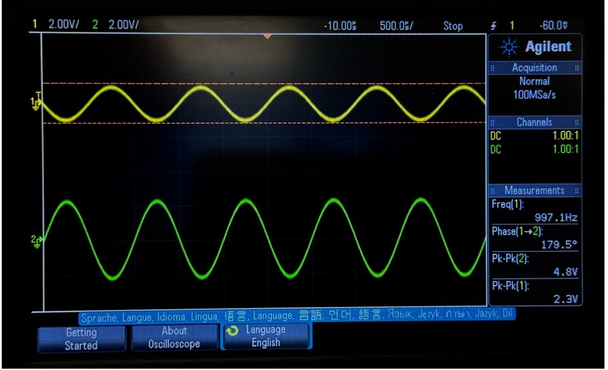
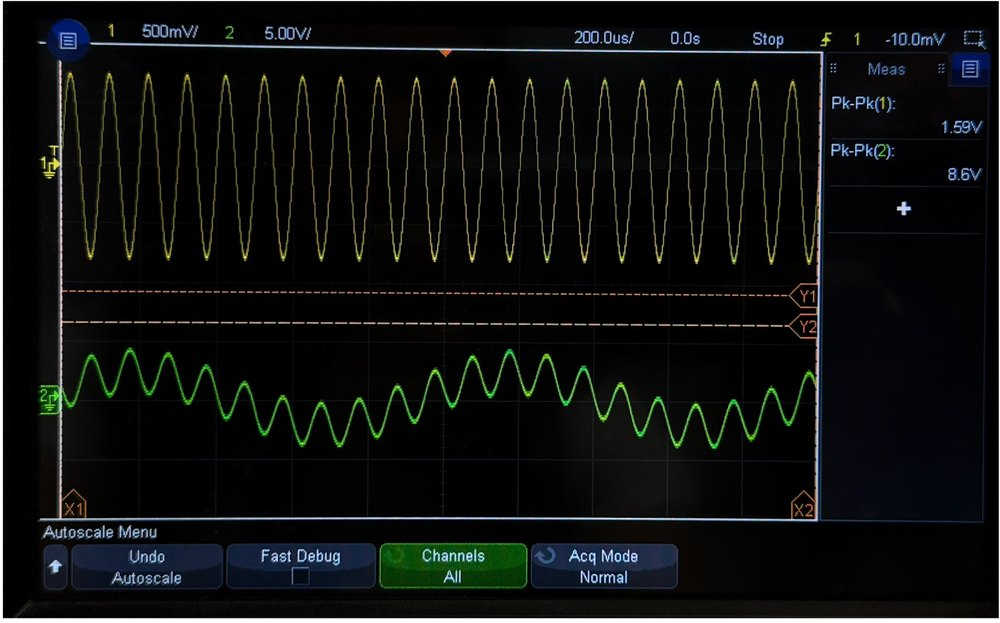
Active high-pass filter
The filter (Ri = 1 kΩ, Ci = 10 nF, Rf = 1 kΩ) has a cutoff of fc = 1/(2πRiCi) ≈ 15.9 kHz and a passband gain of −1. Fed the summing amplifier's 1 kHz + 10 kHz mix, it should strongly attenuate the 1 kHz part and only partly attenuate the 10 kHz part, since 10 kHz is much closer to the cutoff.
- 1 kHz: theory gives a gain of about 0.06, so almost nothing gets through.
- 10 kHz: theory gives about 0.53. We measured about 0.59, which puts the real cutoff a little lower, around 14 kHz, within normal capacitor tolerance.
- Combined: with the mixed signal in, theory predicts about 2.6 Vpp out, and we measured 2.33 Vpp. On the scope, the slow 1 kHz swing is gone from the output and the 10 kHz ripple remains.
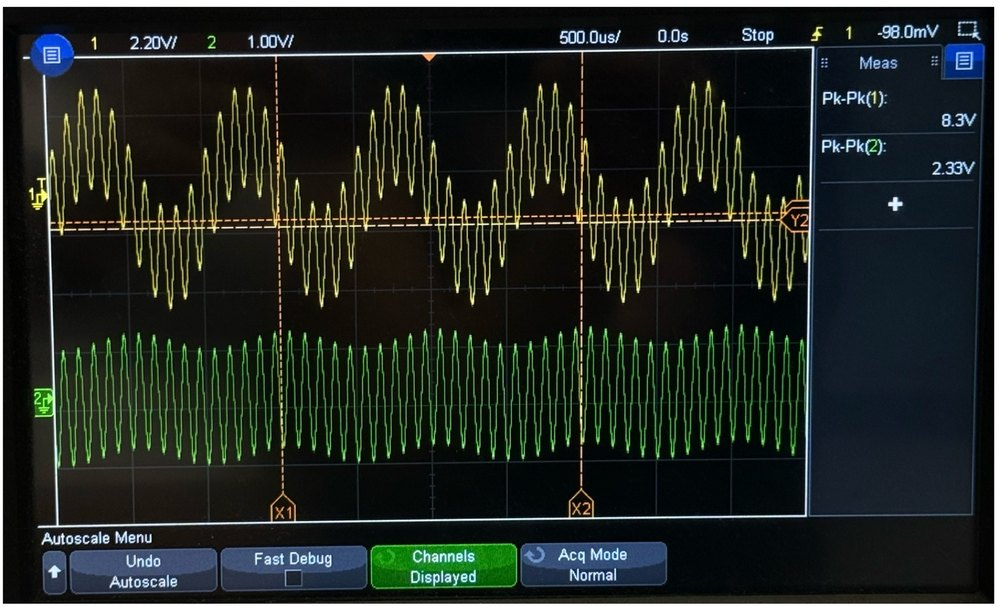
Takeaways
The circuits behaved as designed, and the gaps between prediction and measurement trace back to real component tolerances: an amplifier's gain depends directly on its resistor ratio, and a filter's cutoff on its exact R and C values.
RL & RC Filters: Oscilloscope and Function Generator Measurements
With a lab partner, I built an RL low-pass filter (330 Ω + 220 µH) and an RC high-pass filter (330 Ω + 4.7 nF) on a breadboard and characterized them three ways: a frequency sweep, phase at a single frequency, and the step response. An Agilent 33210A function generator drove each circuit, and an Agilent MSO-X 3032A oscilloscope measured the input on channel 1 and the voltage across the resistor on channel 2. I also simulated both circuits in Multisim (DC operating point, AC sweep, and transient) to predict the results beforehand.
Frequency response: measured vs. theory
I swept each circuit from 1 kHz to 2 MHz and recorded the peak-to-peak voltage across the resistor relative to the input. Below, the measured points are plotted against the theoretical first-order response, with the calculated corner frequency (fc = R/2πL for RL, 1/2πRC for RC).
Theory Measured (hover a point for values)
Show measured data
| RL f (kHz) | Vin (mV) | VR (mV) | Ratio | Theory |
|---|---|---|---|---|
| 1 | 890 | 920 | 1.034 | 1.000 |
| 100 | 900 | 840 | 0.933 | 0.922 |
| 200 | 920 | 760 | 0.826 | 0.767 |
| 300 | 940 | 680 | 0.723 | 0.623 |
| 400 | 960 | 590 | 0.615 | 0.512 |
| 500 | 980 | 510 | 0.520 | 0.431 |
| 600 | 990 | 450 | 0.455 | 0.370 |
| 700 | 1000 | 400 | 0.400 | 0.323 |
| 800 | 1010 | 350 | 0.347 | 0.286 |
| 900 | 1010 | 320 | 0.317 | 0.256 |
| 1000 | 1010 | 290 | 0.287 | 0.232 |
| 1100 | 1010 | 270 | 0.267 | 0.212 |
| 1200 | 1020 | 240 | 0.235 | 0.195 |
| 1300 | 1020 | 230 | 0.225 | 0.181 |
| 1400 | 1020 | 200 | 0.196 | 0.168 |
| 1500 | 1020 | 190 | 0.186 | 0.157 |
| 1600 | 1020 | 180 | 0.176 | 0.148 |
| 1700 | 1020 | 160 | 0.157 | 0.139 |
| 1800 | 1030 | 150 | 0.146 | 0.131 |
| 1900 | 1030 | 140 | 0.136 | 0.125 |
| 2000 | 1040 | 130 | 0.125 | 0.119 |
| RC f (kHz) | Vin (mV) | VR (mV) | Ratio | Theory |
|---|---|---|---|---|
| 1 | 1030 | 40 | 0.039 | 0.010 |
| 10 | 1020 | 110 | 0.108 | 0.097 |
| 20 | 1020 | 190 | 0.186 | 0.191 |
| 30 | 1020 | 270 | 0.265 | 0.281 |
| 40 | 1010 | 340 | 0.337 | 0.363 |
| 50 | 1010 | 400 | 0.396 | 0.438 |
| 60 | 990 | 450 | 0.455 | 0.505 |
| 70 | 990 | 510 | 0.515 | 0.564 |
| 80 | 980 | 550 | 0.561 | 0.615 |
| 90 | 970 | 590 | 0.608 | 0.659 |
| 100 | 970 | 620 | 0.639 | 0.698 |
| 200 | 920 | 770 | 0.837 | 0.890 |
| 300 | 910 | 820 | 0.901 | 0.946 |
| 400 | 910 | 840 | 0.923 | 0.969 |
| 500 | 900 | 850 | 0.944 | 0.980 |
| 600 | 900 | 860 | 0.956 | 0.986 |
| 700 | 890 | 860 | 0.966 | 0.989 |
| 800 | 890 | 860 | 0.966 | 0.992 |
| 900 | 890 | 870 | 0.978 | 0.994 |
| 1000 | 890 | 870 | 0.978 | 0.995 |
Both circuits behave as predicted: the RL output falls off as frequency rises (low-pass), and the RC output rises toward 1 (high-pass). The RC data tracks theory closely. The measured half-power points are about 315 kHz (RL) and 130 kHz (RC), versus calculated values of 239 kHz and 103 kHz, a shift consistent with real components differing from their nominal values and parasitics such as the inductor's winding resistance.
Phase: lagging and leading current
Because the resistor's voltage is proportional to the current, comparing it to the input shows the current's phase. In the RL circuit the current lags the input voltage; in the RC circuit it leads.
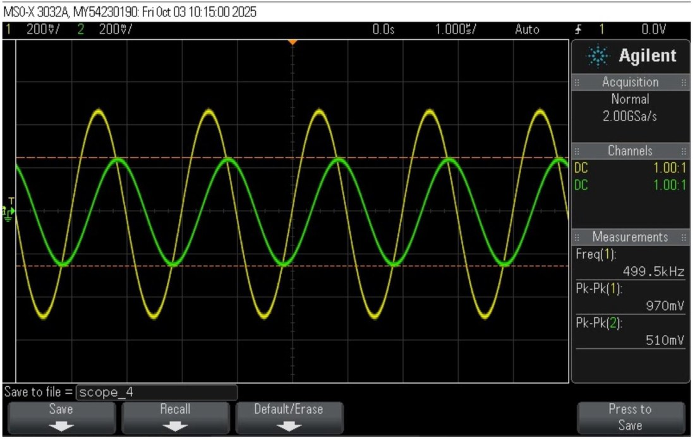
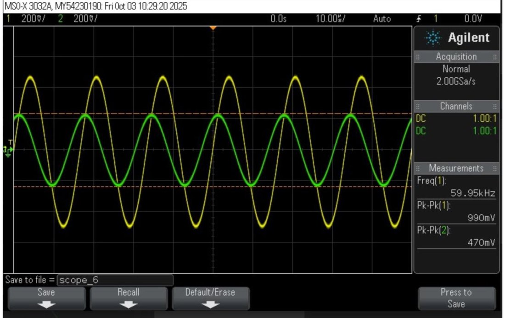
Transient response
Driving each circuit with a 1 kHz square wave shows its step response. The time constants are τ = L/R ≈ 0.67 µs for the RL circuit and τ = RC ≈ 1.55 µs for the RC circuit, and both traces settle within a few microseconds, in line with those values.
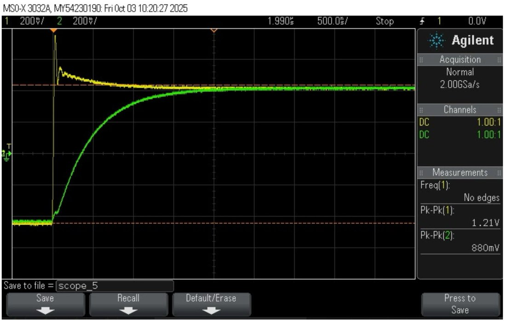
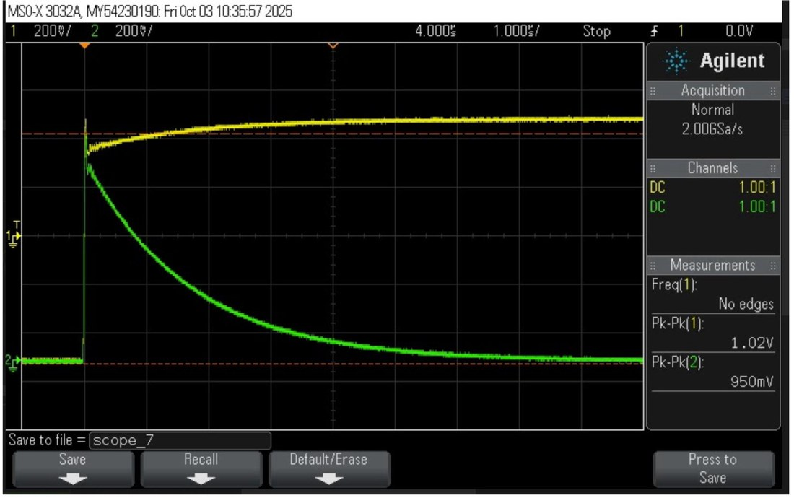
Two-Way Infrared Communication Link
With a lab partner, I built two identical IR transceivers, each pointed at the other, so either side can send a signal and the other detects it. I designed the circuit and the Arduino code, prototyped it in Tinkercad, and then built and tested both copies on breadboards.
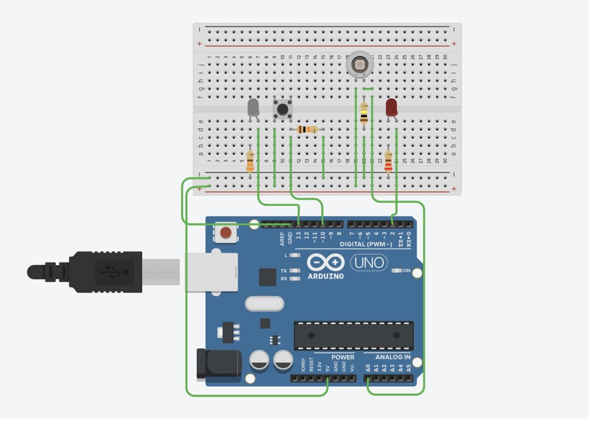
Circuit design
- Transmitter: a push button on pin 10, with a pull-down resistor so it reads a stable LOW when released, switches the IR LED on pin 13. A 330 Ω resistor limits the LED current to about 11 mA.
- Receiver: a photodiode, reverse-biased in series with a 100 kΩ resistor. A photodiode produces only a tiny current, so the resistor turns that current into a voltage the Arduino can read on A0. At 100 kΩ, a few tens of microamps of photocurrent is enough to reach the threshold.
- Indicator: when the reading on A0 rises above 500 (about 2.4 V), a red LED on pin 2, with a 220 Ω current-limiting resistor, turns on.
// receive: photodiode voltage divider on A0 drives the red LED
int sensorValue = analogRead(A0); // 0–1023 for 0–5 V
digitalWrite(Led2, sensorValue > 500 ? HIGH : LOW);Testing
With the two boards facing each other, pressing the button on one lit the red LED on the other, in both directions. The IR light raised the receiving photodiode's reading past the threshold.
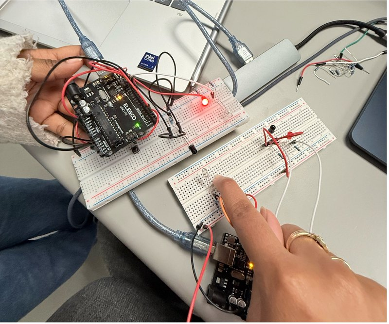
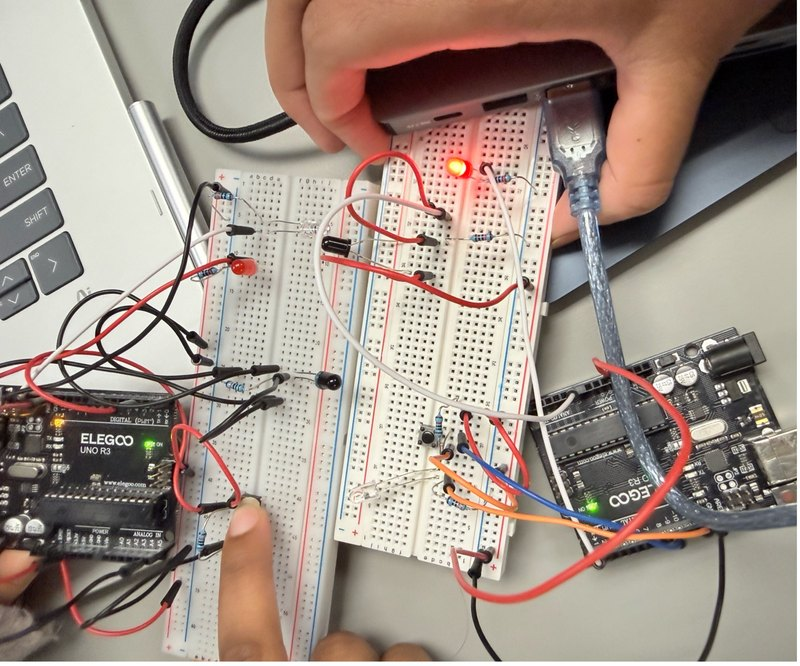
Limitations & next steps
This first version is a simple on/off link: the LED is either on or off, so a strong IR source like sunlight could also trip the threshold. Real IR systems such as TV remotes modulate the LED at a carrier frequency (often 38 kHz) so the receiver can ignore steady background light. Modulating each link at a different frequency would also let several devices share the same space without interfering.
3-Bit Gray Code Encoder & Decoder
Gray code changes only one bit between consecutive values (binary 3 → 4 is 011 → 100, all three bits flipping, but in Gray code it's 010 → 110). That prevents glitches when bits don't switch at exactly the same instant, which is why it's used in rotary position encoders and to reduce bit errors in digital communications. With a lab partner, I designed, simulated, and built a circuit that converts 3-bit binary to Gray code and back.
Encoder: three 8-to-1 multiplexers
Each Gray output bit comes from its own 8-to-1 mux. The binary input B2B1B0 drives the select lines, and the eight data inputs are tied to constant 0s and 1s that encode that bit's column of the truth table. I wrote the mux and encoder in Verilog, checked the synthesized RTL schematic in Vivado against my hand-drawn design, and wrote a self-checking testbench that steps through all 8 inputs and compares each output to the expected Gray code.
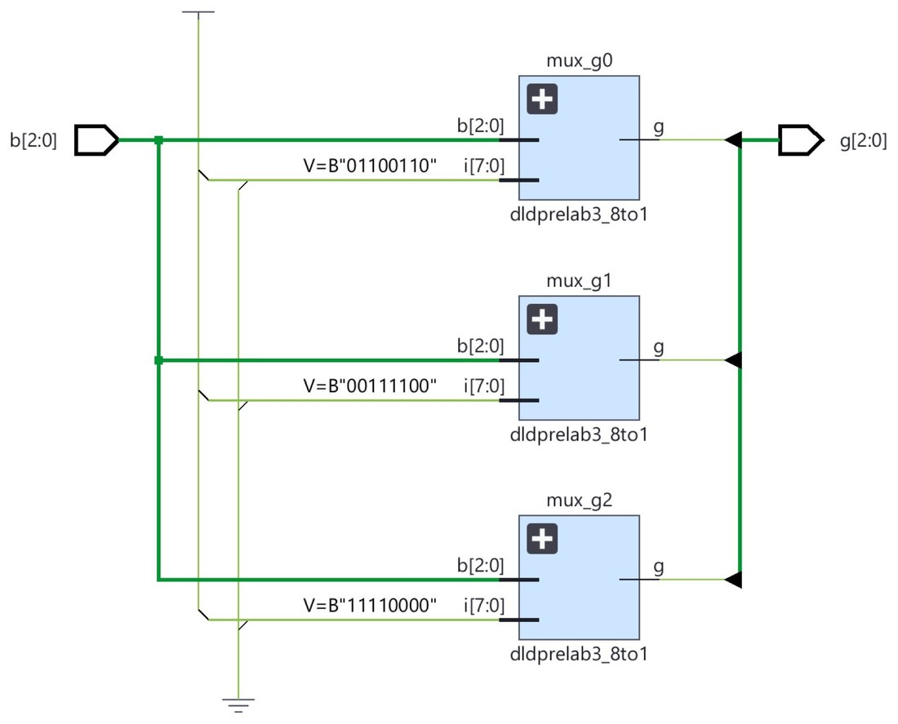
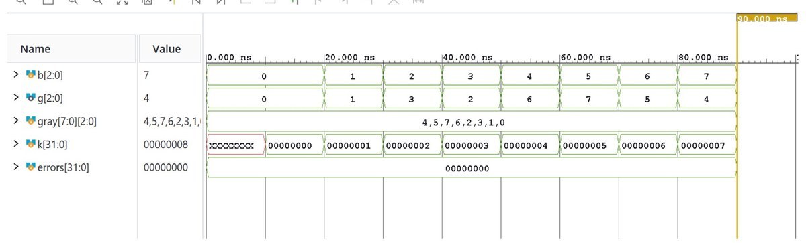
Decoder: simplified to XOR gates
For the reverse direction, I derived Karnaugh maps for each binary bit. The minimal sum-of-products form of B0 alone needs 11 gates, so I used Boolean algebra to reduce the whole decoder to XOR gates:
B2 = G2
B1 = G2 ⊕ G1
B0 = G2 ⊕ G1 ⊕ G0Fewer gates means fewer chips, less board space, less power and heat, fewer wiring errors, and less propagation delay.
Hardware build
Both circuits were then built on a breadboard and checked with LEDs for every input combination.
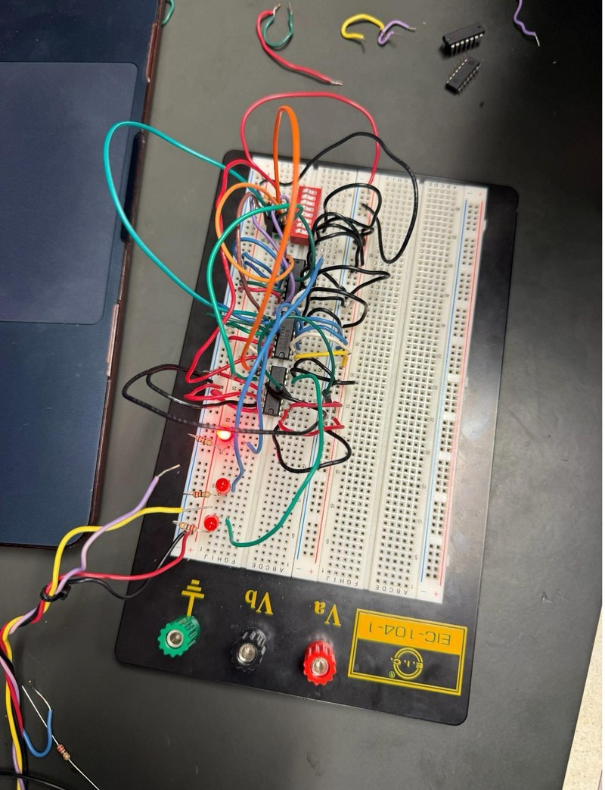
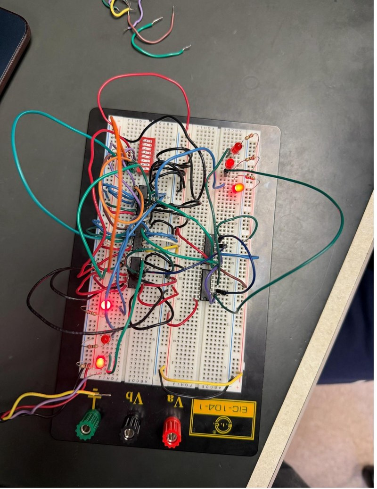